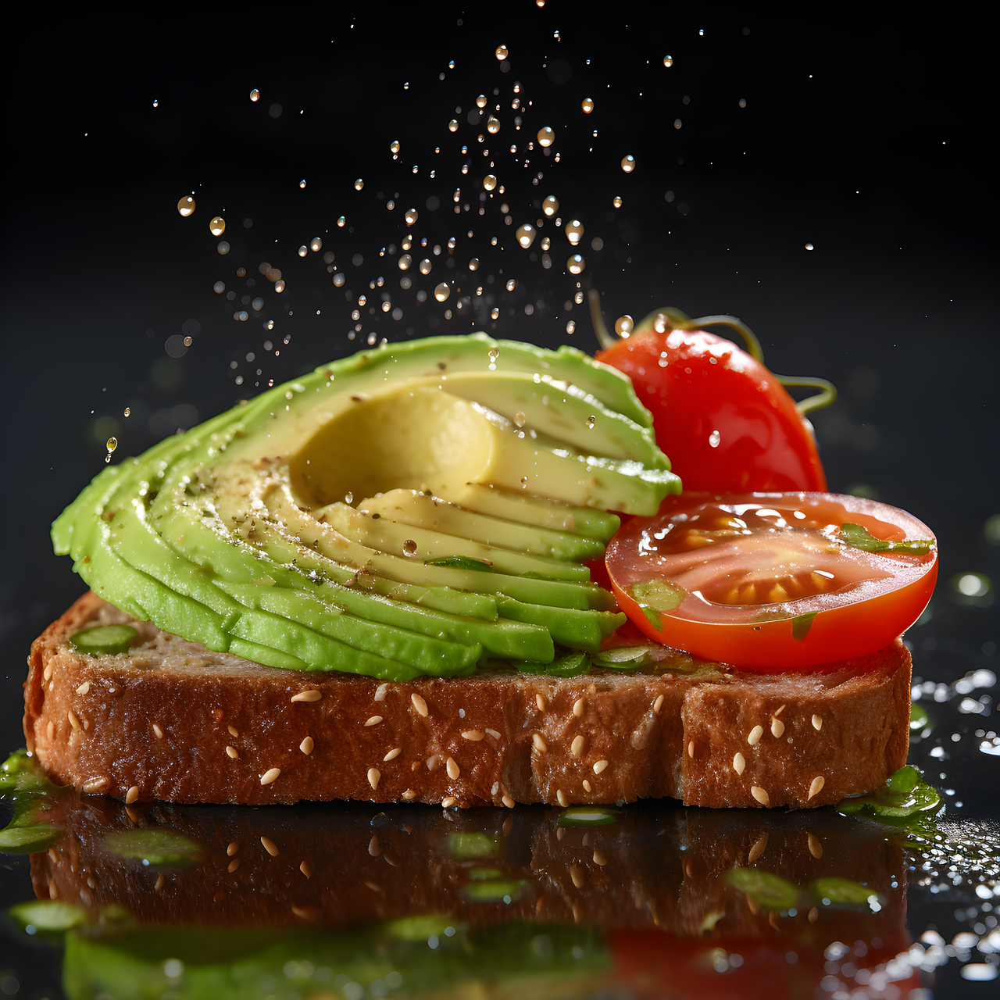

Overnight Oats 1 serving • 2 min prep (4+ hr chill) Ingredients ½ cup rolled oats ½ cup milk of choice 1 tbsp chia seeds 1 tsp maple syrup Pinch of salt Instructions Mix all ingredients in a jar. Refrigerate at least 4 hours. Stir and enjoy cold.
Avocado Toast 1 serving • ~5 minutes Ingredients 1 slice of bread ½ ripe avocado Salt Lemon (optional) Olive oil Instructions Toast bread. Mash avocado with salt + lemon. Spread, drizzle with olive oil. 